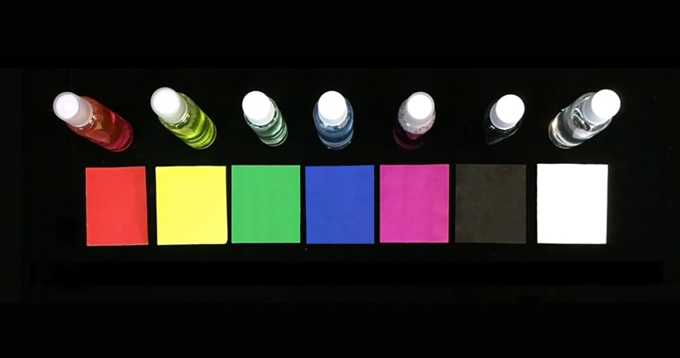

个人思考：好的交互是一个好的工具。它能增强人的能力，给予我们观察更多事物的能力。因为有些事物不能仅靠我们自身观察到，比如我们需借用镜子，来观察自己。

We see with a tool.
项目信息
- CHI EA 2017 (已收录)
- 包容性设计
- 可穿戴设备
我做了
- 相关工作调研
- 原型设计和实现
- 用户测试
- 文章写作 (Prototype Design 部分)
特别感谢
- 2位志愿者
- 王冠云 (指导老师)
概念构思
经过几轮的小组讨论和相关工作调研，我们决定以嗅觉作为这次项目的出发点。因为大多的研究工作集中在触觉和听觉上，较少从嗅觉角度做探索。所以，我们的目标是帮助盲人"闻颜色"。

定义目标
下一步
紧接着重要的步骤是在盲人意识中构建颜色 — 气味的对应关系。

心智中的对应关系
定义对应关系
两位盲人志愿者参与了我们的用户研究，并帮助我们定义了7种基本颜色对应的气味。之后，我们购买了一些液体化学材料，调制出这7种气味。 (更多细节)

用户研究

颜色 — 气味对应关系
原型设计
我们使用 Arduino 和 Processing 来制作原型。整个原型包含三部分：
(1) 捕获图像的摄像头，
(2) 含有颜色识别程序的笔记本电脑，
(3) Arduino 控制的超声波气体喷雾装置。

原型设计

原型系统
原型实现
接下来的视频展示了整套交互装置的使用流程。
原型测试
一位志愿者帮助我们测试原型并给予我们使用反馈：
(1) 气味装置的喷出速度比较慢，
(2) 颜色识别的准确性在不太好的光照条件下有待改进。
原型测试
未来工作
我们希望将来能把整套装置集合到一个盲人产品或者穿戴式设备上，能具体应用在盲人的生活、社交或者盲人教育领域。

应用场景
收尾
很幸运这个项目能被 CHI 2017 Late-breaking work 录用，我也很感激在丹佛度过的快乐和有价值的与会时光。

CHI 2017 大会
Good interaction design helps us see more.